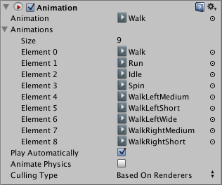

Animation
This is the Legacy Animation component, which was used on GameObjects for animation purposes prior to the introduction of Unity's current animation system.
This component is retained in Unity for backwards-compatibility only. For new projects, please use the Animator component.

Properties
| Property: | Function: | |
|---|---|---|
| Animation | The default animation to play when Play Automatically is enabled. | |
| Animations | A list of animations that you can access from scripts. | |
| Play Automatically | Enable this option to play animation automatically when the game starts. | |
| Animate Physics | Enable this option to have the animation interact with Physics. | |
| Culling Type | Determine when not to play the animation. | |
| Always Animate | Always animate. | |
| Based on Renderers | Cull based on the default animation pose. | |
| Based on Clip Bounds | Cull based on clip bounds (calculated during import). The animation does not be play when the clip bounds are out of view. | |
| Based on User Bounds | Cull based on bounds defined by the user. The animation does not be play when the user-defined bounds are out of view. |
See the Animation Window Guide for more information on how to create animations inside Unity. See Model import workflows page on how to import animated characters.